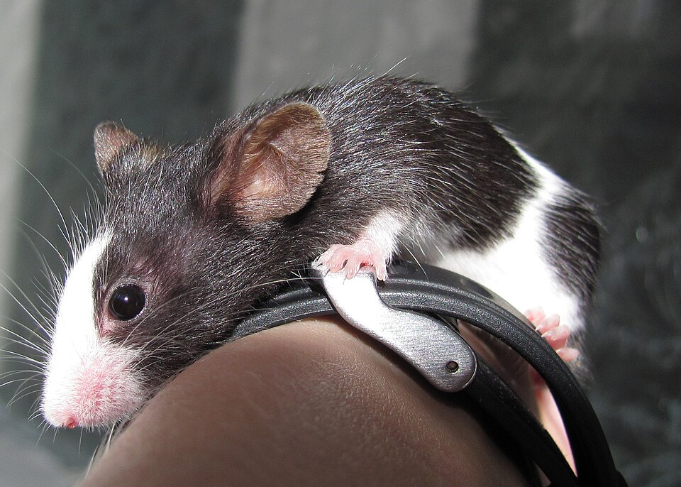

How to check a pet mouse’s health: daily check and warning signs
In short
Mice hide illness, so by the time symptoms are obvious a mouse is often already seriously ill. A short check every morning and evening helps you spot changes early: dull eyes, a ruffled coat, unusual breathing, weight loss or a mouse that sits apart from the others.
If your animal’s condition gets worse, see a vet straight away. Don’t put off the visit and don’t treat your pet yourself based on this article.
Reference material. This is general information from open sources, not a diagnosis or a prescription, and it does not replace a consultation with a vet. Talk to a vet before making any decision about your animal’s health. How we prepare our articles

Why check every day
Mice can go downhill quickly and show only faint signs of pain until things are severe. RSPCA Australia explains that as prey animals they hide illness: if a mouse looks sick, it is already very sick. Check your mice twice a day, in the morning and evening when they are active. Watch quietly for a few minutes first, then look at each mouse closely.
What a healthy mouse looks like
- Clear, wide-open eyes.
- A dense, sleek, shiny coat.
- Even, quiet breathing.
- Sleeps curled up in a ball. A mouse lying stretched out may be unwell.
- Moves briskly, eats and sleeps with the others.
What to look out for
| What to check | Warning signs |
|---|---|
| Eyes | dull or sunken eyes, squinting, discharge |
| Nose and breathing | nasal discharge, chattering, fast or laboured breathing with a lot of belly movement, frequent sneezing |
| Coat and skin | ruffled, dirty or matted fur, droppings stuck under the tail, red skin, bald patches |
| Droppings | diarrhoea, soft foul-smelling droppings |
| Weight and body | weight loss or rapid weight gain, lumps under the skin |
| Behaviour | hiding more than usual, sitting alone in a corner, moving little, losing interest in food, drinking much more |
Sources differ slightly on sneezing: the New South Wales schools guide treats any sneezing as a warning sign, while RSPCA Australia suggests seeing a vet if a mouse sneezes more than a few times over an hour or two. Soft droppings vary too. Mice normally eat a special soft dropping, which is healthy, but soft, foul-smelling droppings left in the cage are a concern.
Why weight matters
The RSPCA notes that losing 20% or more of body weight can be fatal for a mouse. For a 30 g mouse that is just 6 g, so the change is easy to miss by eye. Keeping a weight record helps you see a trend and show it to the vet.
Common problems
- Respiratory infections. According to RSPCA Australia, they are often caused by Sendai virus and Mycoplasma. Signs: sneezing, chattering, laboured breathing, head tilt, less grooming and weight loss. Treatment eases the symptoms, but the infection and the changes in the lungs remain. Treatment is prescribed by a vet.
- Teeth. Incisors grow throughout life. If they overgrow, the mouse eats less, drools, loses weight and may get a swollen face. A vet trims the teeth, and hard things to gnaw lower the risk.
- Skin and mites. Fur mites are a common cause of skin trouble: thinner, greasy fur on the head and body, and itching. Fur loss without sores can also come from a dominant mouse chewing others’ fur.
- Tumours. The most common cancer in mice is mammary tumours. RSPCA Australia says they can double in size in two weeks or less and are almost always malignant. Show any new lump to a vet straight away.
New mice and vet visits
The New South Wales schools guide advises keeping new mice apart for four weeks and watching them closely, because they can carry disease without any signs. When you take a mouse to the vet, RSPCA Australia suggests bringing a cage-mate along so they still smell the same afterwards and don’t fall out. Choose a vet who treats mice.
What to note down before you call the vet
- when you noticed the change
- today’s weight and earlier weights
- a photo or video of breathing and posture
- whether it eats and drinks, what the droppings look like
- whether any new mice arrived
- what you feed and which bedding you use
Notes like these are easier to keep in one place. That’s what we’re building Roddi Health for.
Get early accessSources
- RSPCA: mice health and welfare
- RSPCA Australia: what does an unhealthy mouse look like?
- RSPCA Australia: common health problems in mice
- NSW Department of Education: mice health
- PDSA: mice as pets
Facts checked against the sources on 16 November 2026. Found a mistake or a link that doesn’t open? Write to roddihealth@gmail.com.
Roddi Health is not a veterinary clinic and does not provide veterinary services. This article is for information only, may be incomplete or out of date, and does not replace an examination by a vet. You make your own decisions about caring for your animal. Sources are named for reference: they did not write or endorse this text. More about our blog articles.